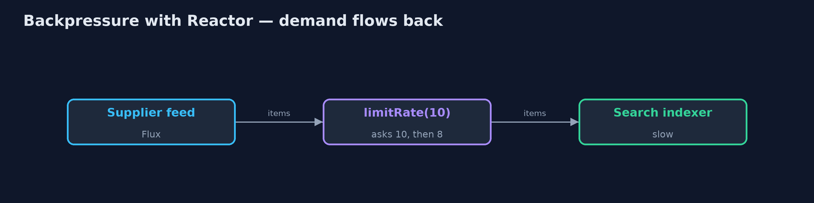
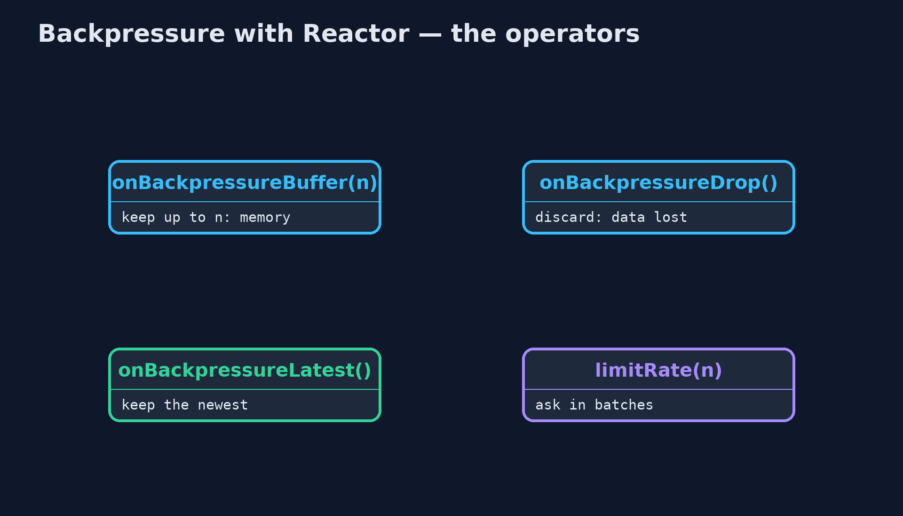
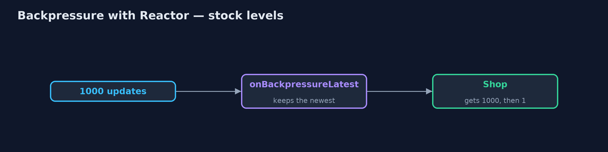
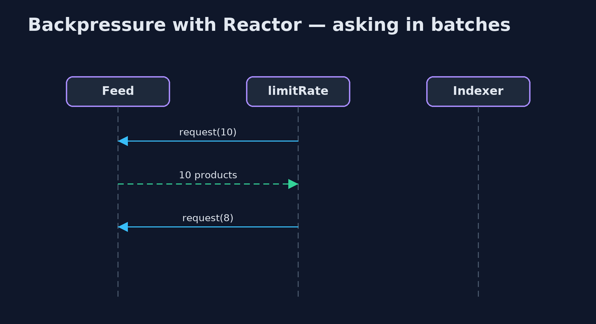

Backpressure with Project Reactor Pattern
src/main/java/com/jk/explore/backpressurereactor/
└── ReactorBackpressureDemo.java The five acts, with Project Reactor: a supplier's product feed into a slow search indexerHandle a fast supplier feed and a slow search indexer with Project Reactor, where every subscriber states its demand: Reactor refuses a source that ignores it, limitRate() asks in batches, and onBackpressureLatest() keeps only the newest stock level.
This is the framework version of the Backpressure pattern. The plain Java version, a separate project in this category, writes a bounded buffer and a Flow publisher by hand. Here Project Reactor, the reactive library behind Spring WebFlux, does the work. In Reactor, every stream, a Flux, carries demand: a subscriber says how many items it wants, and the source may send no more.
The demo shows what Reactor does with a source that ignores demand, how a subscriber asks for items in batches, how limitRate does the asking for you, and how onBackpressureLatest handles updates where only the newest one matters.
The idea in everyday terms
Think of a kitchen and its waiters. In a well-run kitchen, the chef calls out "two more tickets" when ready, and the waiter hands over exactly two. A waiter who ignores the chef and keeps shoving tickets through the hatch is stopped by the head chef before the rail overflows. And for the daily-special board, only the latest chalk counts; nobody reads the old ones.
The scenario
The online store's search indexer reads a supplier's product feed. The supplier sends ten thousand products as fast as it can; the indexer takes a millisecond for each. Stock-level updates for popular items arrive by the thousand, though the shop only ever needs the current level.
Run
./gradlew runThe demo tells the story in 5 acts, each printing exact numbers that the tests check:
| Act | What it shows |
|---|---|
| 1. A source that ignores demand | A feed pushes 10,000 products regardless of demand into an indexer whose queue holds 256: Reactor stops the stream with an OverflowException. |
| 2. Produce only what is asked | The indexer requests 10 at a time from a feed that waits: all 10,000 indexed, never more than 10 asked for and undelivered. |
| 3. limitRate | limitRate(10) makes the feed see requests of 10, then 8, 8, 8: it tops up when three-quarters are used. |
| 4. Only the latest | 1,000 stock-level updates; the shop asks twice and gets [1000, 1]: onBackpressureLatest keeps only the newest. |
| 5. The bill | A source that can wait is simplest; one that cannot must buffer, drop or keep the latest, and an unbounded buffer just hides the pile. |
Test
./gradlew test1 tests in DemoRunsTest. Every number the demo prints is asserted, and nothing depends on the clock, so every run gives the same result.
What the simulation got right, and what it left out
The plain Java version got the idea right: a producer faster than its consumer must be slowed, bounded or pruned, and the JDK's own Flow interfaces let a consumer request items in batches. What it left out is a library where demand runs through every stage. Reactor refused a source that ignored demand with an OverflowException instead of letting a buffer grow. limitRate asks for ten and then tops up by eight when three-quarters are used, so the pipe never runs dry. And onBackpressureLatest turned a thousand updates into the two the shop actually asked for.
Technologies and versions
| Technology | Version | Used for |
|---|---|---|
| Java | 21 | the code (toolchain set in build.gradle) |
| Gradle | 9.2.1 (wrapper) | build and run, nothing to install |
| JUnit | 5.10.2 | the tests |
| Project Reactor | 3.8.7 | Flux, demand, limitRate, onBackpressureLatest |
| videokit | repository tool | the narrated video and animation: Piper en_US-amy-medium, speed 0.8, longer pauses (the approved amy-slow voice) |
Learning Material
| Document | What it is for |
|---|---|
| Dependencies | what the framework and infrastructure are, and why they are here |
| Problem statement | the situation and what the project must show |
| Prerequisites | what you need to know first |
| Backpressure with Project Reactor, explained | the acts in prose |
| Session guide | a one-hour lesson with exercises |
| Animated walkthrough | the acts step by step, narrated |
| Spec | what this project must be true of |
The pattern in one picture
Items one way, requests the other.

Where each piece sits
What to do when nobody is asking.

How the data moves
A thousand updates, two asked for.

Who calls whom, in order
Ten, then top-ups of eight.

Video
video/backpressure-with-reactor-pattern-explained.mp4 (with .m4a audio and .srt subtitles) is built by video/build_video.sh. Rendered media is not committed.
What it costs
- Every source must choose. A source that cannot wait must buffer, drop or keep the latest, and each loses something.
- Unbounded buffers hide the problem.
onBackpressureBuffer()with no limit just moves the pile somewhere harder to see. - A new way of writing code. Streams, operators and schedulers take time to learn and to debug.
When this is too much
If the consumer always keeps up, a plain loop or a blocking queue is simpler. Reactor pays off in services that stream data between fast and slow parts, especially over the network.
Where you have already met this
- Spring WebFlux, built on Reactor.
- RxJava, Akka Streams and Kotlin Flow, with the same ideas.
- The Reactive Streams interfaces, also in the JDK as
java.util.concurrent.Flow.
Where this sits
This project is in micro-services-design-patterns. It is the framework version of the plain Java Backpressure project in the same category, which is left unchanged.